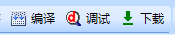

2.工具栏
2.1 文件操作快捷菜单。
如下图所示，快捷操作功能同文件操作菜单。
2.2项目操作菜单
- 2.2.1 编译
对当前的工程文件进行编译操作。并将结果显示在输出窗口中。
- 2.2.2 调试
对编译成功的项目进行模拟运行操作。该功能可以不需要借助实物串口屏快速的验证项目工程的功能是否符合预期需求。具体调试操作请参考调试窗口。
- 2.2.3 下载
将编译生成的.tft文件下载到实物串口屏中
2.3控件编辑菜单
- 2.3.1 控件复制
对界面编辑区中处于选中状态的按钮复制到粘帖板中。也可以使用Crtl+C快捷键执行相同操作。
- 2.3.2 控件剪切
对界面编辑区中处于选中状态的按钮剪切到粘帖板中。也可以使用Crtl+X快捷键执行相同操作。
- 2.3.3 控件粘帖
将剪切板中的控件粘帖到界面编辑区。也可以使用Crtl+V快捷键执行相同操作。
- 2.3.4 控件锁定/解锁
选择控件以后，通过点击锁定/解锁按纽来实现控件的锁定/解锁功能。控件被锁定以后，将再控件的右上角显示一个《锁》图标。 被锁定的控件，不能通过鼠标拖动控件修改控件位置，和鼠标拖动修改控件的大小。但是仍然可以选中控件后通过修改属性区域的x，y，w，h属性来调整控件的位置和大小。该功能能有效防止防止因误操作修改了已经布局好的界面。
- 2.3.5 控件删除
对界面编辑区中处于选中状态的控件执行删除操作。
- 2.3.5 控件撤销/恢复
撤销/恢复上一次在界面编辑区的操作。
- 2.3.6 设备按钮
打开设备选择窗口。可以配置产品系列，型号以及屏幕显示方向等。具体请参考本章节 13.设备窗口章节。
- 2.3.7 ID按钮
点击该按钮，可以切换显示/不显示界面区域控件名称。
- 2.3.8 缩放比例
可以对界面区域的界面编辑内容进行放大/缩小调节。范围为10%-600%。方便界面布局的时候，精确摆放控件的位置和调节控件的大小。
小技巧
可以点击当前的百分比数值，快速将显示比例调整为默认的100%。
- 2.3.8 控件图层调节
图层调节，主要用于在多个控件存在重叠区域时的现实层级关系。一个页面上的所有控件都拥有不同的图层，可以通过图层调节按钮来调节控件的图层关系。

该按钮 ↑ 用于将控件置于所有控件最顶层。
该按钮 ↓ 用于将控件置于所有控件最顶层。
注意
T0，K0系列串口屏，只有在页面初始化的时候，具体图层功能。再触摸屏运行过程中，低层级的控件刷新后，将被置于顶层。X系列串口屏具有图层保持功能，在运行过程中能一直保持图层级别。
注意
使用图层调节按钮，调节控件的图层优先级功能会导致控件ID号变化，如果需要用到名称组等功能，需要特别小心！
2.3.9 控件布局
如图所示,可以使用工具栏中的快捷操作对同时选中的多个控件进行对边沿齐、中心对齐、控件大小相等、等间距、间距放大、间距缩小布局操作。